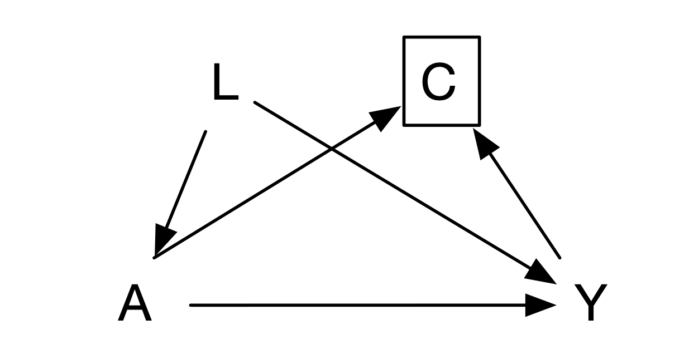

17 Missing Data
Missing data are common in clinical research and can bias estimates, reduce precision, and change the target population. The right response begins by describing why, when, and for whom data are missing—not by applying a mechanical imputation command.
17.1 Mechanisms of missingness
17.1.1 Missing completely at random
Data are MCAR when missingness is independent of observed and unobserved values. Complete-case analysis is unbiased under MCAR but usually inefficient; MCAR is often implausible.
17.1.2 Missing at random
Data are MAR when, conditional on observed variables included in the analysis/imputation model, missingness no longer depends on the unobserved value. Mixed models, inverse-probability weighting, and multiple imputation often rely on MAR. MAR is an assumption, not a result of a test.
17.1.3 Missing not at random
Data are MNAR when missingness depends on the unobserved value even after conditioning on observed data—for example, people with worsening symptoms are more likely to miss follow-up. MNAR cannot be resolved from observed data alone; use clinically informed sensitivity analyses such as delta adjustment, pattern-mixture, or selection models.
17.2 Traditional methods
17.2.1 Deleting incomplete cases
Complete-case analysis is simple but can be biased and inefficient. It is reasonable only when its assumptions are made explicit and sensitivity analyses are presented.
17.2.2 Single imputation
Replacing missing values with a mean, last observation carried forward, or a fixed value understates uncertainty and can distort associations. Such methods should not generally be a primary analysis.
17.2.3 Multiple imputation
Multiple imputation creates several plausible completed datasets, analyzes each, and combines estimates using Rubin’s rules. Include outcome, exposure, important confounders, predictors of missingness, and compatible auxiliary variables; impute within design/analysis groups where appropriate. Use enough imputations for the fraction of missing information and diagnose convergence and plausibility. MI supports MAR, not MNAR.
17.3 Adherence and intercurrent events
17.3.1 Intercurrent events and rescue medication
Treatment discontinuation, switching, rescue medication, death, and other events after assignment require an estimand strategy: treatment policy, hypothetical, composite, while-on-treatment, or principal stratum. The protocol must specify how data after each event contribute to the primary analysis.
17.3.2 Bias from loss to follow-up
Loss to follow-up is selection bias when both treatment and potential outcome affect observation. Compare observed baseline predictors, outcome history, and follow-up by treatment; identify the causal structure and define the population to which the estimate applies.
17.3.3 Inverse-probability-of-censoring weighting
Model each participant’s probability of remaining observed conditional on treatment and past covariates, then weight observed records by its inverse. Correct specification, positivity, and measurement of predictors of censoring are essential; stabilized weights and diagnostics for extreme weights should be reported.

Code 17.1 output: inverse-probability-of-censoring weighting.

Code 17.2 output: weighted covariate summary.
17.4 Survivor bias and time zero
Define a common time zero at which eligibility, treatment strategies, and follow-up begin. Assigning exposure using future information or including only people who survive long enough to receive treatment creates immortal-time or survivor bias. Emulate the target trial: make eligibility and treatment assignment measurable at time zero, align follow-up, and use appropriate methods for adherence and censoring.
References
- Little RJA, Rubin DB. Statistical Analysis with Missing Data. 3rd ed. Wiley; 2019.
- Sterne JAC, White IR, Carlin JB, et al. Multiple imputation for missing data. BMJ. 2009;338:b2393.
- National Research Council. The Prevention and Treatment of Missing Data in Clinical Trials. National Academies Press; 2010.
- Hernán MA, Robins JM. Causal Inference: What If. Chapman & Hall/CRC; 2020.